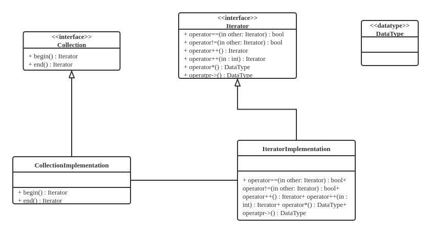

算法纵向拆分 - 分离表示
尝试将算法和数据分离。
逻辑、数据如何表示、算法细节业务流程的细节相关的部分
分离、解耦这三者
泛型编程：先实现算法、使用时再考虑数据类型
数据类型，对计算机底层是一种表示，对算法是一种束缚
迭代器
从问题开始
编程统计考试及格率
int main(int argc, char* argv[]) {
float scores[STUDENT_COUNT];
int passed = 0;
// initialize scores here.
for (int i = 0; i != STUDENT_COUNT; i++) {
if (scores[i] >= 60) passed++;
}
cout << "passing rate = " << (float)passed / STUDENT_COUNT << endl;
return EXIT_SUCCESS;
}
注：这里用!=而不用<的原因是!=的执行更高效。
责任分解
把“分析”单独作为一个功能
void Analyze(float *scores, int student_count) {
int passed = 0;
for (int i = 0; i != student_count; i++) {
if (scores[i] >= 60) passed++;
}
cout << "passing rate = " << (float)passed / student_count << endl;
}
如果成绩使用单向链表存储
struct Student {
float score;
Student* next;
};
//...
Student* head;
则先前的Analyze失效。
重新实现Analyze：
void Analyze(Student* scores) {
int passed = 0, count = 0;
for (Student *p = scores; p != nullptr; p = p->next) {
if (p->score >= 60) passed++;
count++;
}
cout << "passing rate = " << (float)passed / count << endl;
}
“遍历”的需求
-
不变的需求：遍历所有学生的成绩
-
变化的存储方式：操作不希望被某种存储方式绑定
分离“变”与“不变”
-
把“访问”设计成一个接口
-
针对不同的“存储”完成这个接口的不同实现
迭代器
把“访问”设计为一个接口
class Iterator {
public:
virtual ~Iterator() {}
virtual bool operator!=(const Iterator& other) const = 0;
virtual const Iterator& operator++() = 0;
virtual const Iterator* operator++(int) = 0;
virtual float& operator*() const = 0;
virtual float& operator->() const = 0;
bool operator==(const Iterator& other) const { return !(*this != other); }
};
使用迭代器
void Analyze(Iterator* begin, Iterator* end) {
int passed = 0, count = 0;
for (Iterator* p = begin; *p != *end; (*p)++) {
if (**p >= 60) passed;
count++;
}
cout << "passing rate = " << (float)passed / count << endl;
}
需要给“存储”对象一个约束
-
能够返回代表“头”和“尾”的迭代器
-
使用“左闭右开区间”，即 [begin, end) - 以便于用
!=判断结束
class Collection {
public:
virtual ~Collection() {}
virtual Iterator* begin() const = 0;
virtual Iterator* end() const = 0;
virtual int size() = 0;
};
int main(int argc, char* argv[]) {
Collection* collection;
// initialize collection here...
Analyze(collection->begin(), collection->end());
}
迭代器的实现
实现基于数组的集合
class ArrayCollection : public Collection {
public:
ArrayCollection() : size_(10) { data_ = new float[size_]; }
ArrayCollection(int size, float* data) : size_(size) {
data_ = new float[size_];
for (int i = 0; i < size_; i++) *(data_ + i) = *(data + i);
}
~ArrayCollection() { delete[] data_; }
int size() { return size_; }
Iterator* begin() const;
Iterator* end() const;
private:
friend class ArrayIterator;
float* data_;
int size_；
};
其中获取首、尾Iterator的成员函数：
Iterator* ArrayCollection::begin() const {
return new ArrayIterator(data_, 0);
}
Iterator* ArrayCollection::end() const {
return new ArrayIterator(data_, size_);
}
实现基于数组的迭代器
class ArrayIterator : public Iterator {
public:
ArrayIterator(float* data, int index) : data_(data), index_(index) {}
ArrayIterator(const ArrayIterator& other)
: data_(other.data_), index_(other.index_) {}
~ArrayIterator() {}
const Iterator& operator++();
const Iterator& operator++(int);
float& operator*() const;
float* operator->() const;
bool operator!=(const Iterator& other) const;
private:
float* data_;
int index_;
};
const Iterator& ArrayIterator::operator++() {
index_++;
return *this;
}
const Iterator& ArrayIterator::operator++(int) {
index_++;
return ArrayIterator(data_, index_ - 1);
}
float& ArrayIterator::operator*() const { return *(data_ + index_); }
float* ArrayIterator::operator->() const { return (data_ + index_); }
bool ArrayIterator::operator!=(const Iterator& other) const {
return data_ != ((ArrayIterator*)(&other))->data_ ||
index_ != ((ArrayIterator*)(&other))->index_;
}
重写Analyze和main
void Analyze(Iterator* begin, Iterator* end) {
int passed = 0, count = 0;
for (Iterator* p = begin; *p != *end; (*p)++) {
if (**p >= 60) passed++;
count++;
}
cout << "passing rate = " << (float)passed / count << endl;
}
int main() {
float scores[] = {90, 20, 40, 40, 30, 60, 70, 30, 90, 100};
Collection* collection = new ArrayCollection(10, scores);
Analyze(collection->begin(), collection->end());
system("PAUSE");
return EXIT_SUCCESS;
}
迭代器模式
设计模式
-
提供一种方法顺序访问一个聚合对象中的各个元素
-
不暴露该对象的内部表示——与对象的内部表示无关（数组还是链表）

//...
for (Iterator p = begin; p != end; p++) {
// do something with object *p;
}
//...
另一种常见的迭代器模式

如Java等语言不提供++等运算符重载，上述迭代器模式提供了单向迭代：
//...
Iterator it = Collection.iterator();
while (it.HasNext()) {
Object object = it.next();
// do something with object;
}
//...
迭代器与模板
固定的东西：
-
产生迭代器的方法
-
迭代器遍历集合的接口
变化的东西：
-
集合的存储方式
-
迭代器遍历集合的具体实现
迭代器实现了 遍历操作 与 存储方法 的隔离。使得实现算法逻辑时无需关心数据表示，而实现数据存储的时候又无需关心算法的逻辑。
算法的通用化
可以设计一些列通用算法：max, min, sort, count, count_if, find, ...
int main() {
float scores[] = {90, 20, 40, 40, 30, 60, 70, 30, 90, 100};
Collection* c = new ArrayCollection(10, scores);
cout << "passing rate = "
<< (float)count_if(c->begin(), c->end(), passed()) / c.size() << endl;
system("PAUSE");
return EXIT_SUCCESS;
}
改进目标
问题 1
当前的使用方式
void Analyze(Iterator* begin, Iterator* end) {
for (Iterator *p = begin; *p != *end; (*p)++) {
if (**p >= 60) //...
}
}
期待的使用方式
void Analyze(const Iterator& begin, const Iterator& end) {
for (Iterator p = begin; p != end; p++) {
if (*p >= 60) //...
}
}
问题 2
只支持float类型，见如下*和->的重载
class Iterator {
public:
virtual ~Iterator() {}
virtual bool operator!=(const Iterator& other) const = 0;
virtual const Iterator& operator++() = 0;
virtual const Iterator* operator++(int) = 0;
virtual float& operator*() const = 0;
virtual float& operator->() const = 0;
bool operator==(const Iterator& other) const { return !(*this != other); }
};
引入模板
我们需要一种方法，在编写代码时将类型作为可变部分，这些部分在使用前必须做出指明。如此一来，可以先考虑通用的算法和抽象的数据结构，然后再在使用时予以实例化
使用 模板 技术实现 泛型。
通用算法
template <class iterator_>
void Analysis(iterator_ begin, iterator_ end) {
int passed = 0, count = 0;
for (iterator_ p = begin; p != end; p++) {
if (*p >= 60) passed++;
count++;
}
cout << "passing rate = " << (float)passed / count << endl;
}
这里iterator_类型的变量需要实现=, !=, ++运算符。
template <class T>
class ArrayCollection {
public:
ArrayCollection() : size_(10) { data_ = new T[size_]; }
ArrayCollection(int size) : size(size_) { data_ = new T[size_]; }
ArrayCollection(int size, T* data) : size_(size) {
data_ = new T[size_];
for (int i = 0; i < size_; i++) *(data_ + i) = *(data + i);
}
~ArrayCollection() { delete[] data_; }
T* begin(){ return data_; }
T* end() { return data_ + size_; }
private:
T* data_;
int size_;
};
链表节点、链表迭代器、链表容器
template <class T>
struct LinkiedListNode {
T data_;
LinkedListNode* next;
LinkedListNode() : next(nullptr) {}
LinkedListNode(T data) : data_(data), next(nullptr) {}
};
template <class T>
struct LinkedListIterator {
LinkedListNode<T>* pointer;
LinkedListIterator(LinkiedListNode<T>* p) : pointer(p) {}
LinkedListIterator(const LinkedListIterator<T>& it) : pointer(it.pointer) {}
LinkedListIterator<T>& operator++() {
pointer = pointer->next;
return *this;
}
const LinkedListIterator<T> operator++(int) {
LinkedListIterator<T> temp = *this;
pointer = pointer->next;
return temp;
}
T& operator*() const { return pointer->data_; }
T* operator->() const { return &(pointer->data_); }
bool operator!=(const LinkedListIterator<T>& other) {
return pointer != other.pointer;
}
bool operator==(const LinkedListIterator<T>& other) {
return pointer == other.pointer;
}
};
template <class T>
class LinkedListCollection {
public:
LinkedListCollection() : head_(nullptr) {}
LinkedListCollection(int size, T* datq) {
//...
}
~LinkedListCollection() {
//...
}
LinkedListIterator<T> begin() { return LinkedListIterator<T>(head_); }
LinkedListIterator<T> end() { return LinkedListIterator<T>(nullptr); }
private:
LinkedListNode<T>* head;
};
使用如下：
int main() {
float scores[] = {90, 20, 40, 40, 30, 60, 70, 30, 90, 100};
ArrayCollection<float> collection2(10, scores);
LinkedListCollection<float> collection1(10, scores);
Analyze(scores, scores + 10);
Analyze(collection1.begin(), collection1.end());
Analyze(collection2.begin(), collection2.end());
system("PAUSE");
return EXIT_SUCCESS;
}
这里指针由于支持=, !=, ++操作，在这里也可以作为迭代器使用。
事实上，指针是一种迭代器，迭代器也是一种指针。
算法与数据解耦
容器：存储数据，数据的表示
算法：处理数据，抽象的算法实现
迭代器：标准的数据遍历接口，隔离算法与容器，是算法与数据的表示无关
实现通用的算法，将算法与数据表示解耦。
考试科目数变成3
如果上述问题考试科目变成3科，则float型变量不能表示分数，定义Score类型
struct Score {
float value[3];
Score() {}
Score(float f1, float f2, float f3) {
value[0] = f1;
value[1] = f2;
value[2] = f3;
}
Score& operator=(const Score& s) {
value[0] = s.value[0];
value[1] = s.value[1];
value[2] = s.value[2];
return *this;
}
bool operator>=(float pass) {
return value[0] >= pass && value[1] >= pass & value[2] >= pass;
}
};
ostream& operator<<(ostream& out, const Score& s) {
cout << "{" << s.value[0] << ", " << s.value[1] << ", " << s.value[2]
<< "}";
return out;
}
相应地主函数变为
int main(int argc, char* argv[]) {
Score sarray[3];
sarray[0] = Score(60, 60, 60);
sarray[1] = Score(70, 70, 70);
sarray[2] = Score(50, 80, 80);
ArrayCollection<Score> collection3(3, sarray);
LinkedListCollection<Score> collection4(3, sarray);
Analyze(sarray, sarray + 3);
Analyze(collection3.begin(), collection3.end());
Analyze(collection4.begin(), collection4.end());
system("PAUSE");
return EXIT_SUCCESS;
}
如何实现解耦
对于一个数据类型，
| 值 | 操作 | |
|---|---|---|
| 抽象接口 | 值域 | 可用的操作 |
| 具体实现 | 如何存储 | 如何实现操作 |
对于 可用的操作 部分，对如=, !=, ++, *的支持是算法所关心的。算法实际上只与 可用的操作 相关，与具体数据类型无关。
算法、运算符、运算符重载
算法仅与“可用的操作”相关，那么我们就可以抛开类型考虑算法，实现抽象运算，在算法和数据类型（存储）之间实现解耦。
在C++中，“可用的操作”时使用运算符来描述的（如*, ++, !=, >=），他作用在指定数量的操作数上，返回一个结果。
如果我们需要某个数据类型可以使用在某个算法中，只要实现相关的操作就可以了。
这依赖于运算符重载，也可以认为是运算符重载的本来目的：运算符重载就是在新的数据类型上还原运算符的本质。
数据类型与操作
可用的操作是数据类型的抽象接口。
数据类型也可以用 可用操作的集合 来界定，具有相同“可用操作集合”就是相同的数据类型。
如果把“操作”更加泛华，将其定义到一个抽象实体上，那么就可以把“数据类型”进一步抽象化。
抽象结构与类模板
除了“抽象算法”之外，还有“抽象结构”
Stack, LinkedList, Vector
这些抽象结构，与存储什么数据无关，至于数据的存储方式和访问方式相关，可以借助类模板实现。
实现一个链表模板
例如下方链表
template <class T>
struct LinkedListNode {
T data_;
LinkedListNode* next_;
LinkedListNode() : next_(nullptr) {}
LinkedListNode(T data) : data_(data), next_(nullptr) {}
LinkedListNode(T data, LinkedListNode* next) : data_(data), next_(next) {}
};
template <class T>
class LinkedListCollection {
public:
LinkedListCollection() : head_(nullptr) {}
~LinkedListCollection() { clear(); }
bool empty() { return head_ == nullptr; }
void AddFirst(const T& data) {
head_ = new LinkedListNode<T>)(data, head_);
}
bool RemoveFirst() {
if (head_ != nullptr) {
LinkedListNode<T>* p = head_;
head_ = head_->next_;
delete p;
return true;
} else {
return false;
}
}
T* GetFirst() { return head_ != nullptr ? &(head_->data_) : nullptr; }
bool RemoveLast() {
if (head_ != nullptr) {
if (head_->next_ != nullptr) {
LinkedListNode<T>* p;
for (p = head_; p->next_->next_ != nullptr; p = p->next_)
;
delete p->next_;
p->next_ = nullptr;
return true;
} else {
delete head_;
head_ = nullptr;
return true;
}
} else {
return false;
}
}
clear() {
while (RemoveFirst())
;
}
LinkedListIterator<T> begin() { return LinkedListIterator<T>(head_); }
LinkedListIterator<T> end() { return LinkedListIterator<T>(nullptr); }
private:
LinkedListNode<T>* head_;
};
关于 内联函数 ：
C++中inline关键字修饰函数定义（告诉编译器这个函数可能被频繁使用，对性能要求敏感，调用时使用内联展开，避免入栈出栈的操作）
inline int max(int a, int b) { return a > b ? a : b; }
作用：函数内联展开，避免函数调用开销，用空间换时间。
在类定义体内定义（实现）的函数缺省为内联函数。
到此为止 我们为任意类型元素实现链表的方式。
用链表模板组织分数
通过模板实例化使用Linked List（抽象结构）
int main(int argc, char* argv[]) {
//...
LinkedListCollection<Score> collection4;
for (int i = 0; i < 3; i++)
collection4.AddFirst(sarray[i]);
Analyze(collection4.begin(), collection4.end());
//...
return EXIT_SUCCESS;
}
小结
固定的东西：
-
算法/抽象结构的接口与实现
-
“数据”的访问接口（迭代器）
-
“数据”的可用操作（运算符重载）
变化的东西：
-
“数据”的组织形式
-
“数据”的类型（值域、存储、操作实现）
由此实现“算法/抽象结构”与“数据表示”之间的分离
泛型编程：先实现算法，再充实数据表示（类型）
函数对象与算法分解
当“及格”判定规则发生变化
如果某些科目的及格线不是60分
现有的Analyze函数
template <class iterator_>
void Analyze(iterator_ begin, iterator_ end) {
int passsed = 0, count = 0;
for (iterator_ p = begin; p != end; p++) {
if (*p >= 60) passed++;
count++;
}
cout << "passing rate = " << (float)passed / count << endl;
}
将判断及格函数IsPass的函数指针作为参数传给Analyze
template <class iterator_>
void Analyze(iterator_ begin, iterator_ end, bool (*IsPass)(const iterator_&)) {
int passsed = 0, count = 0;
for (iterator_ p = begin; p != end; p++) {
if (IsPass(p)) passed++;
count++;
}
cout << "passing rate = " << (float)passed / count << endl;
}
使用“判断及格”函数指针
template <class iterator_>
bool IsPass(const iterator_& p) {
return p->value[0] >= 70 && p->value[1] >= 60 && p->value[2] >= 60;
}
注：这里的`IsPass`有缺陷：只适用于`Score`类型
int main(int argc, char* argv[]) {
//...
Analyze(sarray, sarray + 3, IsPass<Score*>);
Analyze(collection3.begin(), collection3.end(), IsPass<Score*>);
Analyze(collection4.begin(), collection4.end(), IsPass<LinkedListIterator<Score>>);
//...
}
进一步解耦
这两个函数唯一的不同就是“科一”的及格分数
template <class iterator_>
bool IsPass(const iterator_& p) {
return p->value[0] >= 70 && p->value[1] >= 60 && p->value[2] >= 60;
}
template <class iterator_>
bool IsPass(const iterator_& p) {
return p->value[0] >= 60 && p->value[1] >= 60 && p->value[2] >= 60;
}
如何抽离出相同的处理逻辑，将“及格线”记录下来
-
使用
Score变量const Score pass(70, 60, 60); template <class iterator_> bool IsPass(const iterator_& p) { return p->value[0] >= pass.value[0] && p->value[1] >= pass.value[1] && p->value[2] >= pass.value[2]; } -
使用文件
template <class iterator_> bool IsPass(const iterator_& p) { float pass1, pass2, pass3; ifstream is("pass-score.txt"); is >> pass1 >> pass2 >> pass3; return p->value[0] >= pass1 && p->value[1] >= pass2 && p->value[2] >= pass3; }
可以通过修改pass-score.txt的内容改变及格分数线组合。
这里 单一实例 的问题依然存在，问题在于函数是固定的。
函数对象
定义IsPass函数对象类模板
template <class iterator_, class T>
class IsPass {
public:
IsPass(const T& pass) : pass_(pass) {}
bool operator()(const iterator_& p) { return *p >= pass_; }
private:
T pass_;
};
相应改变算法定义
template <class iterator_, class T>
void Analyze(iterator_ begin, iterator_ end, IsPass<iterator_, T> is_pass) {
int passsed = 0, count = 0;
for (iterator_ p = begin; p != end; p++) {
if (is_pass(p)) passed++;
count++;
}
cout << "passing rate = " << (float)passed / count << endl;
}
使用函数对象
int main(int argc, char* argv[]) {
//...
sarray[0] = Score(60, 60, 60);
sarray[1] = Score(70, 70, 70);
sarray[2] = Score(50, 80, 80);
ArrayCollection<Score> collection3(3, sarray);
LinkedListCollection<Score> collection4;
//...
Analyze(sarray, sarray + 3, IsPass<Score*, Score>(Score(70, 60, 60)));
Analyze(collection3.begin(), collection4.end(), IsPass<Score*, Score>(Score(50, 60, 60)));
Analyze(collection4.begin(), collection4.end(), IsPass<LinkedListIterator<Score>, Score>(Score(60, 60, 60)));
}
判断及格的逻辑改变
新需求：IsPass如果也要多种实现，没课都及格和总分及格
此时可以把IsPass函数对象不作为Analyze的 参数 而将其类型作为Analyze的 模板参数 传入
template <class iterator_, class IsPass_>
void Analyze(iterator_ begin, iterator_ end, IsPass_ is_pass) {
int passsed = 0, count = 0;
for (iterator_ p = begin; p != end; p++) {
if (is_pass(p)) passed++;
count++;
}
cout << "passing rate = " << (float)passed / count << endl;
}
这样就可以是吸纳不同的IsPass_
template <class iterator_, class T>
class IsPass_ForEach {
public:
IsPass_ForEach(const T& pass) : pass_(pass) {}
bool operator()(const iteartor_& p) { return *p >= pass_; }
private:
T pass_;
};
template <class iterator_, class T>
class IsPass_Total {
public:
IsPass_ForEach(const T& pass) : pass_(pass) {}
bool operator()(const iteartor_& p) {
return p->GetTotal() >= pass.GetTotal();
}
private:
T pass_;
};
小结
对于Analyze这个算法
| 描述 | 操作 | 参数 |
|---|---|---|
| 针遍历集合中的所有元素 | 遍历 | iterator_ |
| 判断是否及格 | 判断 | IsPass_ |
| 累加“及格”数量 | 累加 | Analyze()本身 |
有三个无关（正交）的可变部分
基于模板的策略模式
策略模式的模板实现
用两个类参数组合形成一个确定的Analyze算法实例。
策略模型的模板实现：

这里再次体现了 策略 模式。
再看负载监视器
使用 模板策略 实现负载监视器
template <class load_, class memory_, class latency_, class display_>
class Monitor : public load_, public memory_, public latency_, public display_ {
public:
Monitor() {}
void GetLoad() { load = load_::GetCPULoad(); }
void GetTotalMemory() { total_memory = memory_::GetTotal(); }
void GetUsedMemory() { used_memory = memory_::GetUsed(); }
void GetNetworkLatency() { latency = latency_::GetLatency(); }
void Show() { display_::Show(load, total_memory, used_memory, latency); }
private:
float load, latency;
long total_memory, used_memory;
};
这里也可以使用组合代替继承。
相应主程序
int main(int argc, char* argv[]) {
Monitor<Load, memory, Latency, Display> monitor;
while (running()) {
monitor.GetLoad();
monitor.GetTotalMemory();
monitor.GetUsedMemory();
monitor.GetNetworkLatency();
monitor.Show();
sleep(1000);
}
}
定义策略类
class Load {
public:
float GetCPULoqd();
};
class Memory {
public:
long GetTotal();
long GetUsed();
};
class Latency {
public:
float GetLatency();
};
显示策略类
class Display {
public:
void Show(float load, long total_memory, long used_memory, float latency);
};
STL
Standard Template Library - 标准模板库
- 一组最常用的Ｃ++功能的模板实现
- 算法 -
min,max,for_each,find_if,copy,sort,stable_sort等 - 函数对象及其操作：算法的可变部分 -
greater,less,equal_to,logical_and,logical_or,no1,not2,bind1st,bind2nd,ptr_fun等 - 容器及其迭代器：算法所作用的一组数据及对其进行遍历的手段 -
vector,dqueue,list,set,map,stack,queue及其迭代器,istream_oterator,ostream_iterator等 - 其他：如
string类
- 算法 -